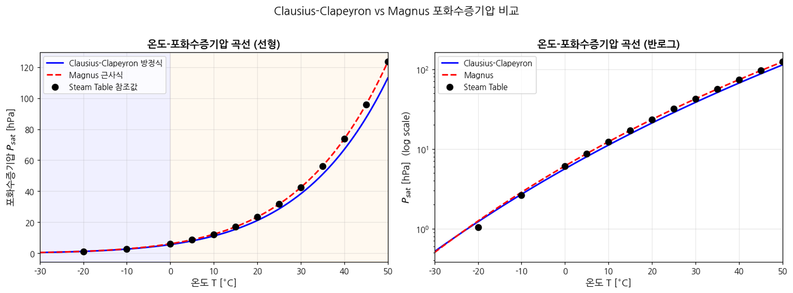
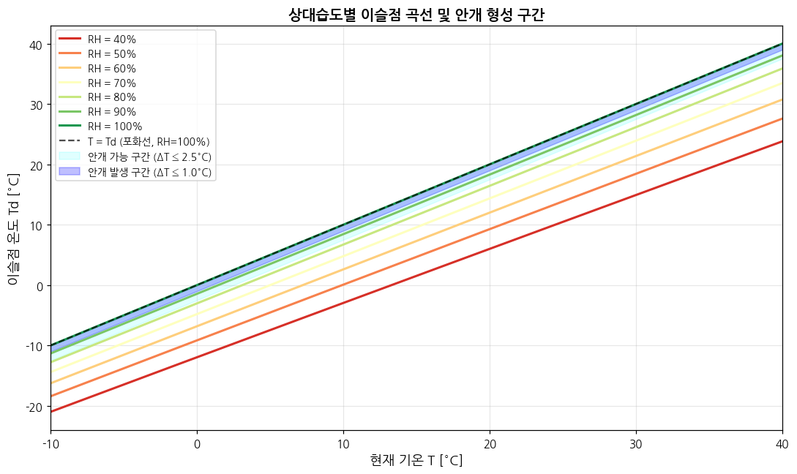
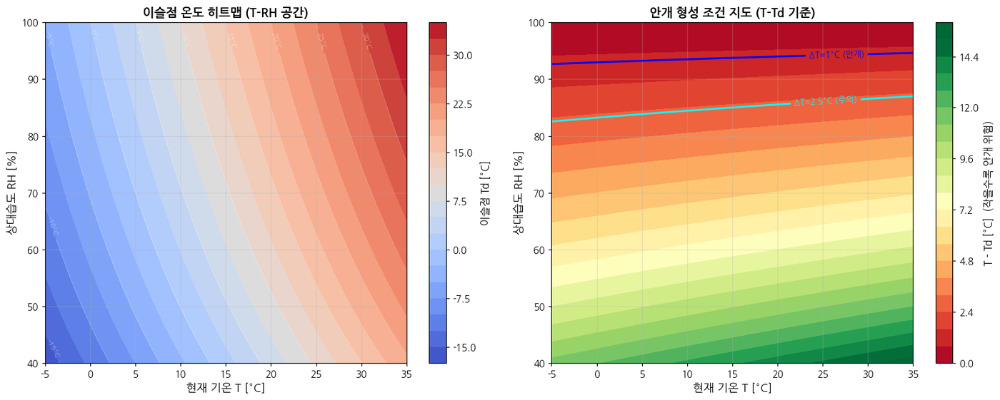
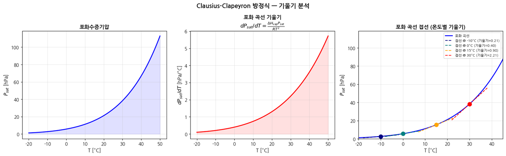
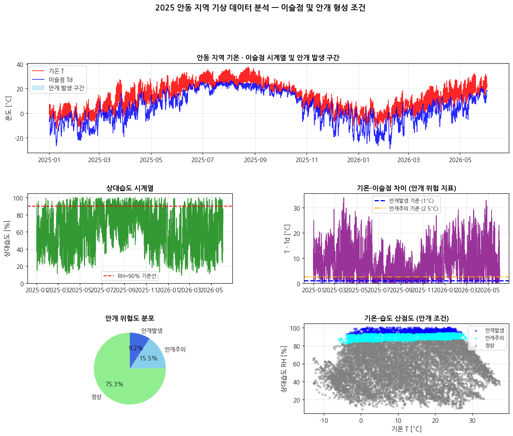
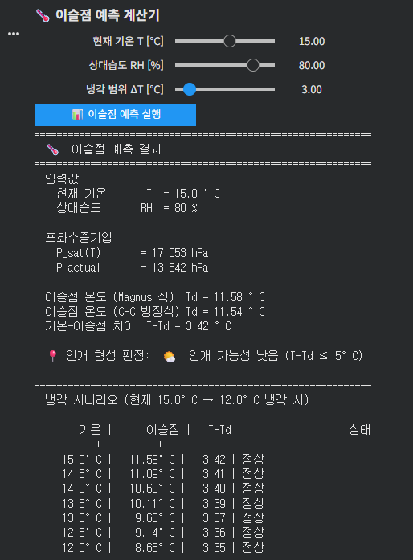
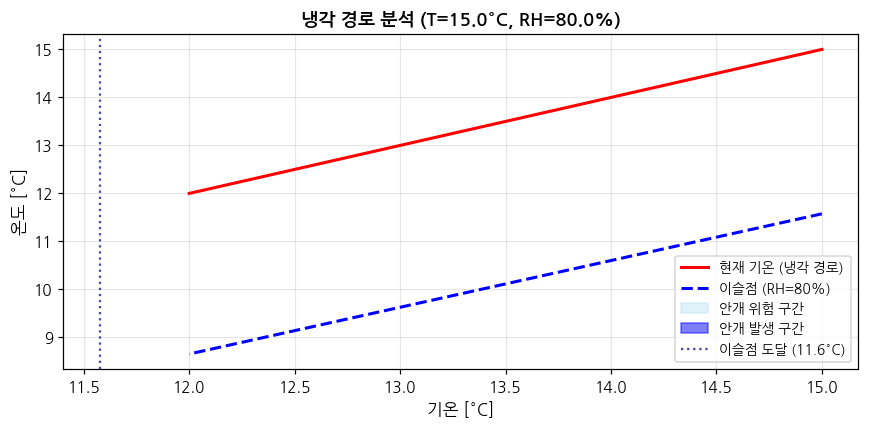

이슬점 예측 시뮬레이션
Clausius-Clapeyron 방정식과 Magnus 근사식을 Python으로 구현해 온도·상대습도로부터 이슬점(dew point)과 안개 형성 가능성을 예측하는 시뮬레이션 및 계산 툴입니다. 열역학 수업 과제로 시작해 기획부터 구현까지 담당했고, 공학인증 우수 사례로 발표 제안을 받았습니다.
개요
클린룸·가스 배관이나 대기 환경에서 결로(이슬 맺힘)와 안개는 온도가 이슬점 아래로 내려갈 때 발생합니다. 이 프로젝트에서는 열역학의 Clausius-Clapeyron 방정식과 Magnus 근사식을 직접 구현해, 온도와 상대습도만으로 이슬점을 예측하고 안개 발생 가능성을 4단계로 판정하는 시뮬레이션과 대화형 계산 툴을 만들었습니다.
모델링 로직
구현은 크게 세 단계로 이루어집니다.
- 현재 기온 T와 상대습도 RH를 입력받아 포화수증기압 P_sat(T)를 계산
- 실제 수증기압 P_actual = (RH/100) × P_sat(T)를 구함
- P_sat(Td) = P_actual을 만족하는 이슬점 Td를 역산하고, T − Td 차이를 기상청 판정 기준에 따라 분류해 안개 형성 가능성을 출력
이슬점 계산에는 두 가지 방법을 병행 적용해 서로 검증했습니다: ① Magnus 역산 공식을 이용한 해석적 계산, ② Clausius-Clapeyron 방정식에 대해 Brent method로 수치 역산하는 방법. 두 결과를 비교한 결과, 대기 온도 범위에서 Magnus 근사식이 Clausius-Clapeyron 방정식과 거의 동일한 결과를 냄을 확인했습니다.
| 온도 T | P_sat | dP_sat/dT |
|---|---|---|
| 0°C | 6.1 hPa | 0.44 hPa/°C |
| 10°C | 12.3 hPa | 0.89 hPa/°C |
| 20°C | 23.4 hPa | 1.72 hPa/°C |
| 30°C | 42.4 hPa | 3.12 hPa/°C |
시각화
① 온도–포화수증기압 곡선
−30°C ~ 50°C 범위에서 두 방정식으로 계산한 포화수증기압과 Steam Table 참조값을 비교했습니다. 두 방정식 모두 대기 온도 범위(−20°C ~ 40°C)에서 Steam Table과 잘 일치했고, 반로그 그래프에서 두 곡선이 직선에 가깝게 나타나는 것은 ln(P_sat)가 1/T에 대해 선형이라는 Clausius-Clapeyron 방정식의 수학적 구조와 정확히 일치합니다.

② 상대습도별 이슬점 곡선
RH 40~100% 조건에서 Magnus 역산으로 이슬점 곡선을 계산했습니다. 기상청 안개 예보 기준(T−Td ≤ 1°C: 안개 발생, T−Td ≤ 2.5°C: 안개 가능성 높음)에 따라 음영 구간을 표시했습니다. 예를 들어 기온 15°C일 때 RH 90%이면 이슬점 약 13.4°C (T−Td ≈ 1.6°C)로 안개 주의 구간이지만, RH 60%이면 이슬점 약 7.1°C (T−Td ≈ 7.9°C)로 안개 발생 가능성이 낮습니다.

③ T-RH 안개 형성 조건 히트맵
온도(−5°C~35°C) × 상대습도(40%~100%) 전체 조합에 대해 이슬점과 T−Td 차이를 2차원 컬러맵으로 표현했습니다. 고습(RH ≥ 90%)이거나 저온일수록 T−Td가 작아져 안개 위험 구간이 넓어짐을 확인했습니다.

④ Clausius-Clapeyron 기울기 분석
포화 곡선의 기울기 dP_sat/dT = (ΔH_vap / R·T²) × P_sat를 온도의 함수로 계산했습니다. 온도가 10°C에서 30°C로 상승하면 기울기는 약 3.5배 증가하는데, 이는 고온 조건에서 소량의 기온 강하만으로도 포화 상태에 도달할 수 있음을 의미하며 여름철 새벽에 복사 안개가 자주 발생하는 이유를 열역학적으로 설명합니다.

실측 데이터 적용 — 안동 지역 사례
2025년 안동 지역의 시간별 기상 데이터(기온, 상대습도)를 입력으로 구현한 알고리즘을 실제 대기 조건에 적용했습니다. 각 관측 시각의 기온·상대습도로부터 이슬점을 계산하고 T−Td 차이에 따라 안개 위험도를 분류한 결과, 기온과 이슬점이 근접하거나 교차하는 시간대가 안개 형성 가능 구간으로 나타났으며, 이를 통해 안동 지역의 안개 형성 패턴을 정량적으로 확인할 수 있었습니다.

이슬점 예측 계산 툴
현재 기온과 상대습도를 입력하면 이슬점과 안개 형성 조건을 즉시 출력하는 대화형 계산기를 구현했습니다. 슬라이더로 기온·상대습도·냉각 범위를 설정하면 이슬점 온도 (Magnus/C-C 두 방법 동시 출력), 포화·실제 수증기압, T−Td 및 4단계 안개 판정, 0.5°C 단계별 냉각 시나리오 표와 냉각 경로 그래프가 자동 계산됩니다.
예를 들어 기온 15°C, 상대습도 80% 조건에서는 이슬점 약 11.5°C, T−Td = 3.42°C로 "가능성 낮음"으로 판정되며, 냉각 시나리오상 약 13°C 아래로 내려가면 안개 주의 단계에 진입해 11.5°C에서 포화 상태에 도달함을 확인할 수 있습니다.


배운 점 & 향후 계획
- 서로 다른 두 계산 방식(해석적 Magnus 근사 vs 수치적 Brent method 역산)을 교차 검증하며, 근사식이 실제 방정식을 얼마나 잘 대체할 수 있는지 정량적으로 확인하는 법을 익혔습니다
- 실제 관측 데이터(안동 지역)에 모델을 적용해보면서, 이론적으로 잘 맞는 모델도 실측 데이터 특유의 노이즈·패턴과 어떻게 만나는지 확인하는 경험을 했습니다
- 향후 특정 공정 구간(클린룸, 가스 배관 등)의 실제 온습도 로그에 적용해 결로 위험 구간을 사전 경보하는 형태로 확장하고 싶습니다